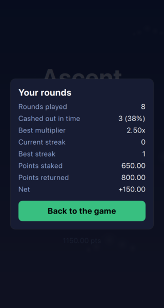
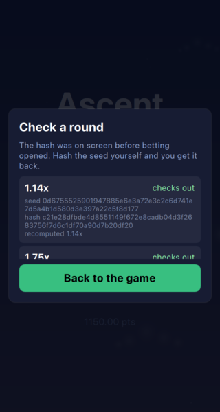

A game that forgets everything when it closes is a demo. This chapter is about the parts that survive the app being killed, and about the numbers a player wants to see once they have played more than one round.
Two values have to outlive the process: the balance and the statistics. Felgo's Storage is a key-value store over SQLite, which is the right size of tool for two keys.
Storage { id: storage databaseName: "ascent" // Felgo's Storage answers with undefined for a key that was never written, // which is what a first launch looks like: the wallet keeps the balance it // was built with and the statistics stay empty. Component.onCompleted: { PlayerWallet.restore(storage.getValue("balance") || 0) PlayerStats.restore(storage.getValue("stats") || ({})) Rounds.engine.autoCashOutAt = storage.getValue("autoCashOutAt") || 0 } }
The interesting part is what a first launch looks like. Storage answers with undefined for a key that was never written, and undefined is exactly what should land the player on a fresh wallet - so there is no separate "have I run before" flag to keep in step with the data it describes.
The wallet decides what to do with what it is handed:
void Wallet::restore(qreal balance) { if (balance <= 0.0) return; m_balance = toPoints(balance); emit balanceChanged(); }
A balance of zero or less is not restored. A hand-edited database, a key that was never written, a half-finished write - all of them leave the wallet on the balance it was constructed with, which is what a new player gets. Restoring a nonsensical balance would be worse than ignoring it.
Writing happens on the signal, not on a timer and not on shutdown:
Connections {
target: PlayerWallet
function onBalanceChanged() {
storage.setValue("balance", PlayerWallet.balance)
}
}
That has a consequence worth stating out loud: a bet is deducted and written the moment it is accepted, so force-quitting mid-round does not get the stake back. That is not a bug to fix later - a game that let a player escape a losing round by killing the app would be a game with no losing rounds.
The statistics watch the round source rather than being told by the screen.
void PlayerStats::onRoundCrashed() { if (m_stakeInPlay <= 0.0) return; ++m_roundsPlayed; if (m_cashedOutThisRound) { ++m_roundsWon; ++m_currentStreak; m_bestStreak = qMax(m_bestStreak, m_currentStreak); } else { m_currentStreak = 0; } m_stakeInPlay = 0.0; m_cashedOutThisRound = false; emit statsChanged(); }
Three decisions are visible in those few lines.
A round with no stake in it is not counted at all. Watching a round costs nothing and proves nothing, and counting it would turn every statistic into a measure of how long the app was left open.
A round is counted when it ends, not when it starts. Until the balloon pops the round is neither won nor lost, so there is nothing to record.
And the streak is reset rather than decremented. A streak is a run of wins, so one loss ends it - while bestStreak keeps what the run was worth.

Saving is one map rather than seven keys:
QVariantMap PlayerStats::save() const { return { { QStringLiteral("roundsPlayed"), m_roundsPlayed }, { QStringLiteral("roundsWon"), m_roundsWon }, { QStringLiteral("bestMultiplier"), m_bestMultiplier }, { QStringLiteral("currentStreak"), m_currentStreak }, { QStringLiteral("bestStreak"), m_bestStreak }, { QStringLiteral("totalWagered"), m_totalWagered }, { QStringLiteral("totalReturned"), m_totalReturned } }; } void PlayerStats::restore(const QVariantMap &saved) { // Every key falls back to the value a new player starts with, so a save from // an older build that never knew about a statistic still loads. m_roundsPlayed = saved.value(QStringLiteral("roundsPlayed"), 0).toInt(); m_roundsWon = saved.value(QStringLiteral("roundsWon"), 0).toInt(); m_bestMultiplier = saved.value(QStringLiteral("bestMultiplier"), 0.0).toReal(); m_currentStreak = saved.value(QStringLiteral("currentStreak"), 0).toInt(); m_bestStreak = saved.value(QStringLiteral("bestStreak"), 0).toInt(); m_totalWagered = saved.value(QStringLiteral("totalWagered"), 0.0).toReal(); m_totalReturned = saved.value(QStringLiteral("totalReturned"), 0.0).toReal(); emit statsChanged(); }
Every field falls back to what a new player starts with. A save written by a build that had never heard of a particular statistic still loads, and the missing value reads as "none yet" instead of as a failure.
An automatic cash out is a standing instruction: take the money at this multiplier whether or not anyone is watching. The engine handles it in the one place the crash point is also pinned.
void RoundEngine::takeTheMoneyAtTheTarget(qreal shown) { // A target at or above the crash point is a target this round never reaches. // Setting it to exactly where the balloon pops loses, the same as a tap at // that moment would have: the multiplier reads one step short and then it is // over. if (m_autoCashOutAt <= 0.0 || m_autoCashOutAt >= m_crashPoint) return; if (shown < m_autoCashOutAt) return; // Pinned to the target, the same way a crash is pinned to the committed // point. A 16 ms clock lands somewhere past the threshold, and paying at // wherever it landed would make the setting a suggestion. setMultiplier(m_autoCashOutAt); cashOut(); }
A 16 ms clock never lands on the threshold. It lands somewhere past it, and paying at wherever it landed would make the setting a suggestion - so the multiplier is pinned to the target, exactly as a crash is pinned to the committed point.
Two rules follow from where this sits in advanceTo.
Reaching the target on the same tick the balloon pops is a loss. A player tapping at that moment would have been too late as well: the number reads one step short and then the round is over. The setting does not get a better deal than a hand on the button.
The target is settled before the crash even when a single tick covers both. That ordering is the whole reason it is written this way: a dropped frame - a hitch, a slow paint, a debugger pause - must not turn a win into a loss. The first version checked the crash first, and a test that advanced the round by a whole minute in one step caught it.
The last ten rounds are kept for the strip along the top of the screen, and each one carries more than its multiplier:
void RoundHistory::onRoundCrashed(qreal crashPoint, const QString &revealedSeed) { // Newest first: the strip is read from the end the player's eye starts at. m_rounds.prepend(QVariantMap{ { QStringLiteral("multiplier"), crashPoint }, { QStringLiteral("commitment"), m_commitment }, { QStringLiteral("seed"), revealedSeed } }); while (m_rounds.size() > Capacity) m_rounds.removeLast(); emit roundsChanged(); }
The commitment and the revealed seed travel with the round, because a result that cannot be checked afterwards is just a number. That is what the verification screen promised in the fairness chapter reads from - and it re-derives the crash point from the seed every time the list is drawn rather than trusting a verdict stored next to the data it is meant to be checking.

One detail there is deliberate. The screen is handed the game's own ProvablyFair instance:
qmlRegisterSingletonInstance(uri, 1, 0, "Fairness", fair);
Not a second instance built for the occasion. Two copies could be configured differently - a different house edge is all it would take - and then the screen would be confirming a claim nobody made, with arithmetic the game does not use.
Rounds are recorded whether or not they were bet on, which is the opposite of how the statistics work. The distinction is worth keeping: the strip is what the game did, and the statistics are what the player did.
Nothing in the game had to change to run on a phone. Everything that did change is in the build, and it is worth walking through, because most of it is Felgo and Qt each having an opinion about the same file.
Felgo's iOS configuration points the bundle at ios/Project-Info.plist by name, whether or not that file exists, and looks for a launch screen called ios/Launch Screen.storyboard - with the space. Those two names are the convention: write files with those names and they are picked up, and any mechanism that wants to supply its own instead will be quietly overruled. Qt's QT_IOS_LAUNCH_SCREEN is one such mechanism. Left in, it generates a second storyboard and compiles it into the bundle alongside the real one, where it sits being ignored, because only the one the plist names is ever shown. Suppressing it is one line:
set(QT_NO_SET_DEFAULT_IOS_LAUNCH_SCREEN TRUE)
The plist itself is worth keeping short. Templates tend to arrive declaring a reason for the camera, the microphone, the photo library, contacts, Bluetooth and location. This game asks for none of them, and a usage string for a permission that is never requested is a question at review time with no answer behind it. What is left is the identity of the app, portrait orientation - the balloon rises, and landscape would letterbox the game into a strip - and the launch screen's name.
One line in the same file had a longer story than it looks:
if(APPLE AND NOT IOS AND NOT CMAKE_OSX_DEPLOYMENT_TARGET) set(CMAKE_OSX_DEPLOYMENT_TARGET "12.0" CACHE STRING "" FORCE) endif()
CMAKE_OSX_DEPLOYMENT_TARGET is not the Mac's variable. It is Apple's, and on an iOS build it becomes IPHONEOS_DEPLOYMENT_TARGET - so a macOS minimum of 12.0 set before project() left the iOS bundle claiming to run on iOS 12, which the Qt inside it cannot do. The guard keeps the number on the platform it was chosen for and lets Qt's own toolchain supply the iOS one, which is 16 and is not a number this project should be inventing.
Sound needed a decision rather than a fix:
if(IOS)
# Qt's default media backend on iOS is its own build of ffmpeg, which Felgo
# ships as an xcframework with an arm64 simulator slice and no Intel one -
# while the Qt in the same kit has an Intel simulator slice and no arm64 one.
# The two cannot be linked together, so the simulator build fails on missing
# av_* symbols.
#
# The darwin backend has neither problem: it is AVFoundation, it is in both
# architectures, and it carries no bundled decoder into the app. The game only
# plays its own short sounds, which is what this backend is for.
qt_import_plugins(Ascent
INCLUDE_BY_TYPE multimedia Qt6::QDarwinMediaPlugin)
endif()
Qt's default media backend on iOS is its own build of ffmpeg. Swapping it for AVFoundation is a smaller app and one less bundled decoder to ship, and a game that plays a handful of short effects loses nothing by it.
The Simulator did not work, and the reason is worth stating precisely, because it looks like a project error for a long time before it turns out not to be one.
An iOS binary does not target an architecture. It targets an architecture and a platform - arm64 + iOS and arm64 + iOS-simulator are as different as arm64 and x86_64, and a linker will say so. Three such pairs matter on a Mac with Apple silicon, and the Felgo SDK ships two: the device slice is arm64 + iOS, and the simulator slice is x86_64 + iOS-simulator, from the era when simulators ran Intel code. The modern simulator runtime accepts arm64 only. So the arm64 simulator build fails to link - building for 'iOS-simulator', but linking in object file built for 'iOS' - and the x86_64 build links but will not install.
The phone is unaffected, because the pair the phone wants is the pair the SDK has. That is the whole of it, and knowing it early would have saved a day: when a toolchain error mentions a platform and not just an architecture, check what pairs you actually have before assuming the build is misconfigured.
Getting onto the device is then ordinary Apple ceremony, and free. A personal Apple ID in Xcode is enough for a Personal Team, which signs apps that run for seven days. Two of the steps have to happen on the phone itself: enabling Developer Mode under Settings > Privacy & Security, which reboots it, and trusting the certificate under Settings > General > VPN & Device Management, without which the app installs and then refuses to launch.
The game has been running all this way on files copied next to the binary, and that is the right way to develop: a QML edit is picked up by restarting the app rather than by rebuilding it. It is not a way to ship. Deployed files are files - visible in the bundle, editable in place, and loaded from a path that has to be correct at startup.
A shipping build compiles them into the binary instead. Felgo's own instruction for the switch is to comment one line out and two lines back in, which works exactly until the day somebody does one half of it. So the switch is not a comment:
# In a development build the QML and the assets are copied next to the binary,
# so a QML edit is picked up by restarting the app rather than by rebuilding it.
# On a game whose work is mostly tuning numbers until something feels right,
# that difference is most of the day.
#
# Everywhere else they are compiled into the binary instead. Nothing the game
# runs on is then a loose file in the bundle: nothing to edit in place, nothing
# that can go missing, and one path fewer that has to be right at startup.
#
# Multi-config generators - Xcode, and therefore every iOS build - leave
# CMAKE_BUILD_TYPE empty, because the configuration is picked when building
# rather than here. Those land on the shipping arrangement, which is the safe
# way round: loose files are what breaks on a device, while a missed reload is
# only an inconvenience.
if(CMAKE_BUILD_TYPE STREQUAL "Debug")
deploy_resources("${QmlFiles};${AssetsFiles}")
set(AscentQmlModuleContents "")
set(AscentMainQml "qml/AscentMain.qml")
else()
set(AscentQmlModuleContents QML_FILES ${QmlFiles} RESOURCES ${AssetsFiles})
set(AscentMainQml "qrc:/qml/AscentMain.qml")
endif()
qt_add_qml_module(Ascent
URI Ascent
VERSION 1.0
${AscentQmlModuleContents}
NO_RESOURCE_TARGET_PATH
)
# The entry point is compiled in rather than chosen at runtime, because it is
# the same decision as the one above and must not be able to disagree with it.
target_compile_definitions(Ascent PRIVATE ASCENT_MAIN_QML="${AscentMainQml}")
Three things have to agree here, and only one question decides all three: where the QML goes, which path main.cpp is handed, and the stage Felgo reports. CMAKE_BUILD_TYPE already knows the answer - a Debug build is one somebody is working in - so it is asked rather than duplicated. The entry point travels as a compile definition:
felgo.setMainQmlFileName(QStringLiteral(ASCENT_MAIN_QML));
That looks like indirection for its own sake until you picture the failure it removes: a release build with the QML compiled in and main.cpp still pointing at a directory that is no longer there. The app starts, the window opens, and nothing is in it.
One case does not answer the question the same way. Multi-config generators - Xcode, and therefore every iOS build - leave CMAKE_BUILD_TYPE empty, because the configuration is chosen when building rather than when configuring. Those fall to the shipping arrangement, which is the right way round: loose files are what goes missing on a device, while a reload you have to rebuild for is only an inconvenience.
PRODUCT_STAGE needs one more file to mean anything. Setting it in the build is not what the running app reads: it reads qml/config.json, and Felgo rewrites four fields of that file - the identifier, the two version numbers and the stage - out of the values above. Rewrites, not creates. A project without a config.json gets no warning and no error; it simply reports the test stage forever, whatever the build was told.
{
"title": "Ascent",
"identifier": "com.merdak.ascent",
"orientation": "portrait",
"versioncode": 1,
"versionname": "1.0.0",
"stage": "publish"
}
That the build edits a file in the source tree has a consequence worth knowing before it surprises you: configuring a Debug build leaves stage on test, and configuring a Release build leaves it on publish, so a file you have not touched shows up as changed depending on which build directory you configured last. What belongs in version control is the shipping value.
The license key is the one thing here the build cannot decide. It is still empty, and that - not anything above - is what the Felgo splash screen is waiting for.
On macOS there is one more thing, and it is the kind of problem that presents itself as something else entirely: the app's icon stops appearing. Not a missing icon - the file is in the bundle, correctly named, correctly referenced. The bundle is simply no longer trusted.
if(APPLE AND NOT IOS)
# The linker signs the executable ad hoc, and everything copied into the bundle
# afterwards - the icon, the QML, the assets - lands outside that signature.
# macOS then reads the bundle as one whose resources have gone missing and
# declines to trust it, which it shows by refusing to use its icon.
#
# A target of its own rather than a POST_BUILD step, because a POST_BUILD step
# belongs to the link and a QML-only change does not relink: the file would be
# copied in, the signature would be left describing the file before it, and the
# icon would go missing on the one kind of build that happens most often. A
# target is always out of date, so this runs after every build, and it depends
# on the whole of Ascent so it runs after the copies rather than beside them.
add_custom_target(AscentSignature ALL
COMMAND codesign --force --sign - "$<TARGET_BUNDLE_DIR:Ascent>"
COMMENT "Signing the bundle so macOS accepts its resources"
VERBATIM)
add_dependencies(AscentSignature Ascent)
endif()
The linker signs the executable ad hoc, and everything copied in afterwards - the icon, the QML, the assets - lands outside that signature. macOS reads the result as a bundle whose sealed resources have gone missing, and declines to use its icon, which is the only symptom you get.
Why a target rather than the obvious POST_BUILD command: a POST_BUILD command belongs to the link step, and a QML-only change does not relink. The file gets copied in, the signature is left describing the bundle as it was before, and the icon disappears on exactly the kind of build that happens most often. A custom target is always out of date, so it runs every time.